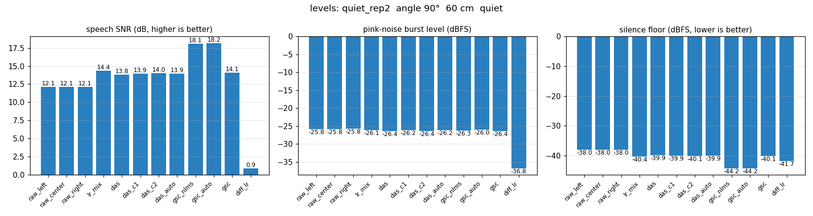
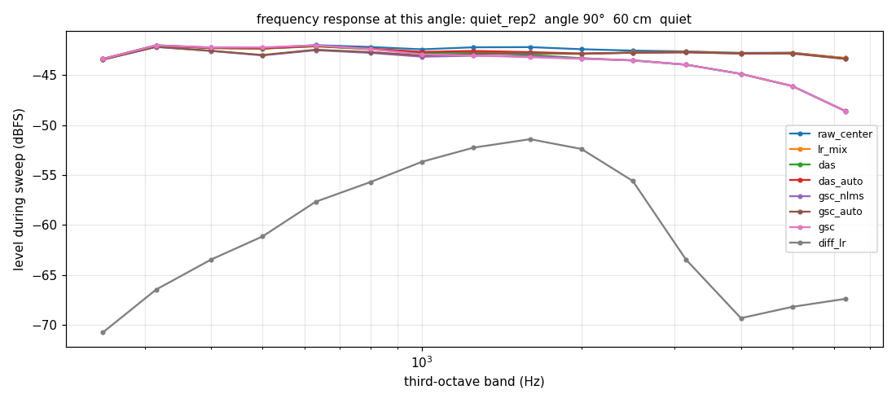
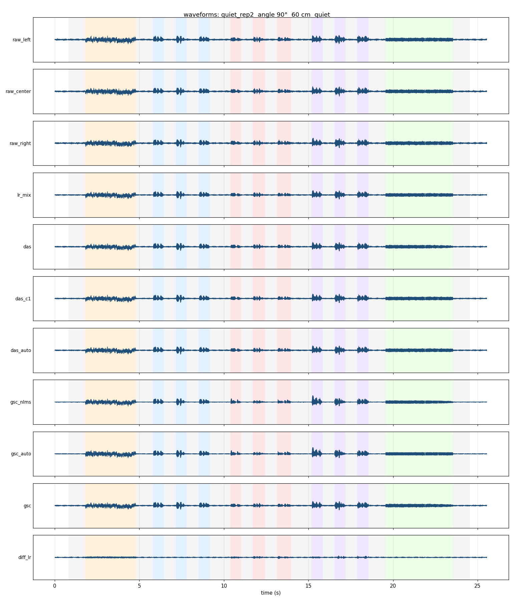
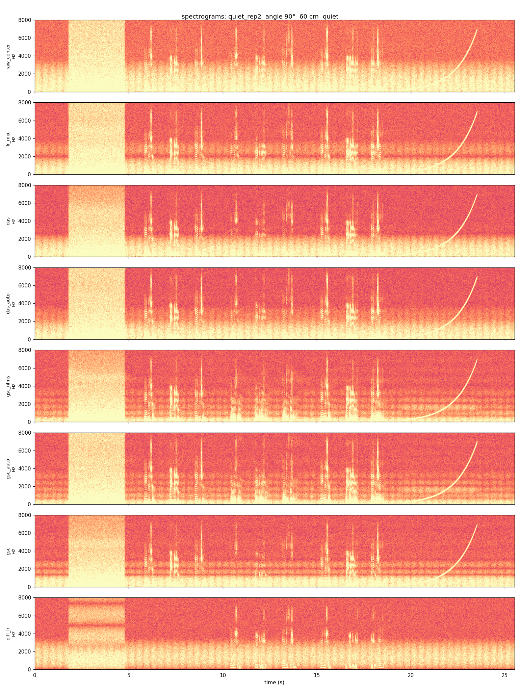

angle 90°, 60 cm, quiet, 25.55 s. Clip offset 0.8 s (confidence 0.942).
Microphones hear the source at +0° (L-R delay 0.0 samples, peak 7.3).
| path | rms_dbfs | speech_snr_db | noise_level_dbfs | silence_floor_dbfs | interf_rejection_db | interf_rejection_lf_db | snr_under_interference_db | speech_preservation | peak | clips |
|---|---|---|---|---|---|---|---|---|---|---|
| raw_left | -29.67 | 12.11 | -25.78 | -38.01 | 0.0 | -0.04 | 2.57 | 0.9747 | 9711 | 0 |
| raw_center | -29.66 | 12.12 | -25.79 | -38.0 | 0.0 | 0.0 | 2.66 | 0.9769 | 8445 | 0 |
| raw_right | -29.65 | 12.12 | -25.77 | -37.99 | 0.04 | 0.06 | 2.81 | 0.9749 | 7969 | 0 |
| lr_mix | -30.12 | 14.38 | -26.13 | -40.37 | 1.08 | 1.77 | 3.72 | 0.9941 | 8732 | 0 |
| das | -30.31 | 13.84 | -26.35 | -39.88 | 0.9 | 1.15 | 3.46 | 8449 | 0 | |
| das_c1 | -30.07 | 13.94 | -26.16 | -39.93 | 0.9 | 1.21 | 3.54 | 0.9935 | 8557 | 0 |
| das_c2 | -30.4 | 14.04 | -26.39 | -40.1 | 0.92 | 1.39 | 3.46 | 0.9826 | 8451 | 0 |
| das_auto | -30.07 | 13.94 | -26.16 | -39.93 | 0.9 | 1.21 | 3.54 | 0.9935 | 8557 | 0 |
| gsc_auto | -30.14 | 18.16 | -25.96 | -44.24 | 1.86 | 2.79 | 5.52 | 0.9735 | 10168 | 0 |
| diff_lr | -39.7 | 0.89 | -36.79 | -41.71 | 6.69 | 5.73 | -11.47 | -0.0019 | 2807 | 0 |
| gsc | -30.43 | 14.1 | -26.37 | -40.14 | 1.61 | 2.08 | 4.1 | 0.9943 | 8307 | 0 |
| gsc_nlms | -30.42 | 18.08 | -26.29 | -44.21 | 1.82 | 2.61 | 5.4 | 0.9791 | 10113 | 0 |



